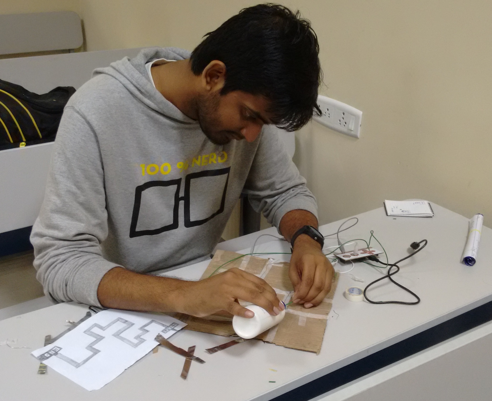

|  |
Hi!
I am a recent computer science graduate student from the Department
of Computer Science at Binghamton
University.
I received the Bachelor of Engineering (B.E.) degree with distinction in Electronics and
Telecommunication
Engineering from Sant Gadge Baba Amravati
University,
Amravati.
During summer 2018, I interned as Data Scientist at Live in Bing, Binghamton and built machine
learning
models to meet business goals related to rent and Customer satisfaction. I founded Last Minute
Preparation
an organization to provide IT training. I worked at Infosys Limited, Mysore as a Systems
Engineer
and
developed Enterprise applications for Infosys Technology Excellence Division. I interned at
C-Net
solutions
(I) Pvt. Ltd., Nagpur where I received wireless network training and implemented wireless
networks
and
administered firewall environments.
My research interests are in the field of Computer Vision, Machine Learning, Deep Learning,
Wireless Sensor
Network, Image Processing, and Home Automation.
|